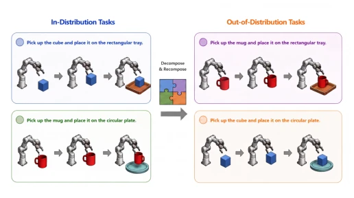
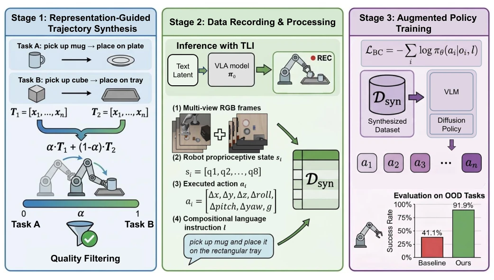
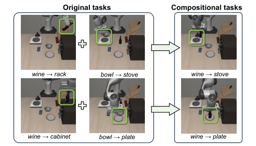

VLA models are often like "rote-learning" straight-A students, performing excellently on the training set but failing once encountering unseen object combinations. ACT-VLA attempts to feed the model some "mixed doubles" training material using "synthetic data", shifting reasoning-time techniques to pre-training. This approach is indeed effective, with OOD performance surging on LIBERO, but unfortunately, it remains self-indulgent in simulation, and whether it works on real hardware remains to be seen. Moreover, only two-skill chaining was implemented; what about complex tasks? It counts as saving a costly "tuition fee" for data-scarce robot learning, but do not expect it to go directly to the production line, as the sim-to-real gap persists. Additionally, it relies on the quality of the pre-trained model's latent representations; if the base model is inadequate, this method is futile.
The core pain point is the poor generalization of VLA models. Existing VLA models [3]-[8] rely on large-scale demonstration data, but robot data collection costs are extremely high [1], [2], making it difficult to cover all task combinations. Models easily overfit to specific object-goal pairs (e.g., cups can only be placed on round plates) and fail when encountering unseen combinations (e.g., cups on square plates). Although reasoning-time intervention (e.g., TLI [12]) can address some issues, it cannot internalize the capability. Existing decomposed methods [18], [19] rely on external planners, whereas this paper aims to internalize combination ability into the weights without requiring additional teleoperation.

Fig. 1. Illustration of compositional generalization via object–target re- pairing. Left (In-Distribution): training tasks contain fixed object–target couplings—cube→rectangular tray and mug→circular plate. Right (Out- of-Distribution): by decomposing and recombining the original task struc- tures, we construct novel test configurations never seen during training— mug→rectangular tray and cube→circular plate . These re-paired combina- tions require the model to generalize beyond its memorized associations.
方法Method
整体流程分三步：表征引导轨迹合成、数据记录处理、增强策略训练。核心是利用文本潜在插值（TLI）[12]，将两个基础任务的文本潜在向量混合，引导模型生成新任务轨迹。创新点在于：1) 指令设计：重组原始指令以匹配新任务结构，确保语言监督与轨迹一致；2) 质量控制：用物理模拟器过滤失败轨迹，确保训练数据有效，避免错误关联；3) 训练动态：平衡合成与原始数据量，防止合成分布压倒原始分布导致灾难性遗忘。具体实现中，通过线性缩放过渡参数α，在残差流中逐步注入新任务上下文，同时抑制旧任务，保证物理连续性。最终将合成数据加入标准 BC 训练，使模型内化组合技能，推理时无需干预。相比推理时干预，这种方法消除了部署时的计算开销，将组合能力直接写入权重。
The overall process is divided into three steps: representation-guided trajectory synthesis, data recording processing, and enhanced policy training. The core utilizes Textual Latent Interpolation (TLI) [12], mixing text latent vectors of two base tasks to guide the model in generating trajectories for new tasks. The innovations are: 1) Instruction design: reorganizing original instructions to match the new task structure, ensuring consistency between language supervision and trajectories; 2) Quality control: filtering failed trajectories using a physics simulator to ensure training data validity and avoid erroneous associations; 3) Training dynamics: balancing the volume of synthetic and original data to prevent the synthetic distribution from overwhelming the original distribution and causing catastrophic forgetting. In specific implementation, the transition parameter α is linearly scaled to gradually inject new task context into the residual stream while suppressing old tasks, ensuring physical continuity. Finally, synthetic data is added to standard BC training, enabling the model to internalize combination skills without intervention at inference. Compared to reasoning-time intervention, this method eliminates computation overhead during deployment and writes combination ability directly into the weights.

Fig. 2. The overall pipeline of our proposed method. Our approach consists of three stages: (1) representation-guided trajectory synthesis, (2) data recording and processing, and (3) training on the augmented dataset. Synthesized demonstrations are filtered by the physical simulator before being incorporated into training.
On the LIBERO benchmark, new combinations of Spatial-OOD and Goal-OOD were constructed. Baselines include UniVLA [29], OpenVLA [4], π0 [6], and inference-time TLI [12]. The metric is task success rate. Results show that ACT-VLA improved by 52.7% and 49.0% over π0.5 on OOD tasks, outperforming inference-time TLI. Ablation experiments demonstrate that the synthetic data itself is effective, and training-time synthesis is superior to inference-time intervention without requiring extra inference overhead. However, it is limited to simulation, mainly verifying two-skill chaining, and complex long-horizon tasks were not verified.

Fig. 3. Illustration of compositional task construction. Each compositional task (right) is formed by combining the object from one original task with the target location from another, following the task construction protocol of [12]. These re-paired combinations are absent from the training set, serving as out- of-distribution evaluation scenarios.